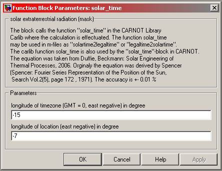

Solar_Time
Path: CARNOT/Basic/Weather_and_Sun
Purpose:
Calculates the solar time from the legal time.
Description:
In the solar time sun is at the highest position (azimuth = 0°
or 180° for southern hemisphere) at noon (12:00:00). The solar time depends
not only on the time in the year but also on the geographical position.
The block calls the function "solar_time" in the CARNOT
Library Carlib where the calculation is effectuated. The equation was taken
from Duffie, Beckmann: Solar Engineering of Thermal Processes, 2006.
The function is available as Matlab-function
legaltime2solartime(time, longitude, longitudenull)
and may be used in m-files. The inverse function to determine the legal time
from the solar time is also available:
solartime2legaltime(time,longitudenull,longitude)
Input:
| time | : | time of the year in s January 1st 00:00:00 = 0 s, December 31st 24:00:00 = 365*24*3600 s |
Output:
| solartime | : | solar time in s |
Parameters and Dialog Box:

Literature:
Duffie, J., Beckman, W.: Solar Engineering of thermal processes,
John Wiley & Sons, Inc. 2020
Characteristics:
| Direct Feedthrough | : | Yes |
| Sample Time | : | Inherited from driving block |
| Vectorized | : | No |